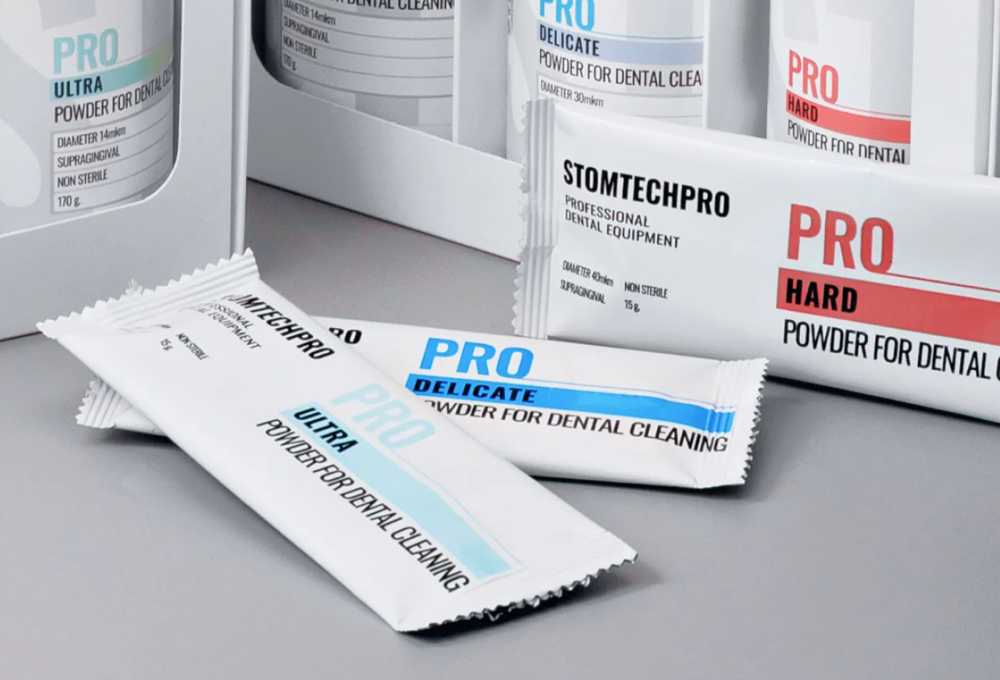

Три фракции на основе эритритола и соды под разные клинические задачи. Совместимы со стандартными наконечниками воздушно-абразивной обработки. Заказ напрямую у производителя или через официальных дистрибьюторов.

Самая мягкая фракция 14 мкм. Профилактика, детский приём, чувствительные пациенты, поддесневая обработка.

Универсал 30 мкм. Мягко снимает налёт и биоплёнку без дополнительной полировки. Для ежедневной работы.

Крупная фракция 40 мкм. Налёт курильщика, труднодоступные и пришеечные зоны, самые сложные случаи.
Выбор определяется клинической задачей, а не маркой наконечника — все три фракции работают на стандартных системах.
| Параметр | ULTRA | DELICATE | HARD |
|---|---|---|---|
| Размер частиц | 14 мкм | 30 мкм | 40 мкм |
| Основа | Эритритол | Эритритол | Сода |
| Форма частицы | Округлая | Округлая | Кристаллическая |
| Задача | Профилактика, чувствительные, дети | Универсальная гигиена | Плотный пигментированный налёт |
| Абразивность | Минимальная | Низкая | Высокая |
| Поддесневая обработка | Да | Да | Наддесневая |
| Вокруг имплантов | Да | Да | Нет |
| Фасовка | 170 г | 170 г | 300 г |
| Цена | 1 990 ₽ | 1 750 ₽ | 890 ₽ |
| Цена за грамм | 11,7 ₽ | 10,3 ₽ | 3,0 ₽ |
Все порошки совместимы со стандартными пескоструйными наконечниками. Проверить совместимость с вашим аппаратом
Один и тот же порошок поставляется в трёх форматах — под разные задачи закупки: постоянный расход, знакомство с линейкой и разовое применение.
Основной формат для постоянной работы. ULTRA и DELICATE — по 170 г, HARD — 300 г.

ULTRA, DELICATE и HARD в одной упаковке — весь спектр задач приёма сразу. Удобно для старта работы и как подарочный формат партнёрам.

Разовая фасовка на одну-две процедуры. Удобна для пробных приёмов, выездной работы и когда нужно попробовать фракцию, не открывая флакон.
Условия поставки стиков и комплектов уточняйте у менеджера — напишите нам
Без наценки посредников, полный комплект документов, отгрузка по РФ и ближнему зарубежью.
Оставить заявкуПять официальных партнёров по России — удобно, если вы уже закупаете у них другие позиции.
Список дистрибьюторовПродаёте расходники в своём регионе? Обсудим цены, объёмы и защиту территории.
Условия для дилеровЗакажите бесплатный комплект из трёх порошков и оцените расход, деликатность и совместимость на своём оборудовании.